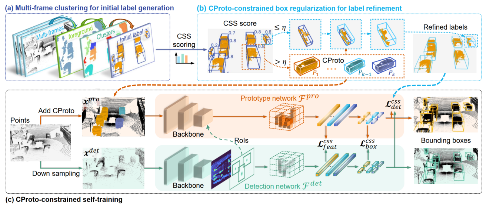
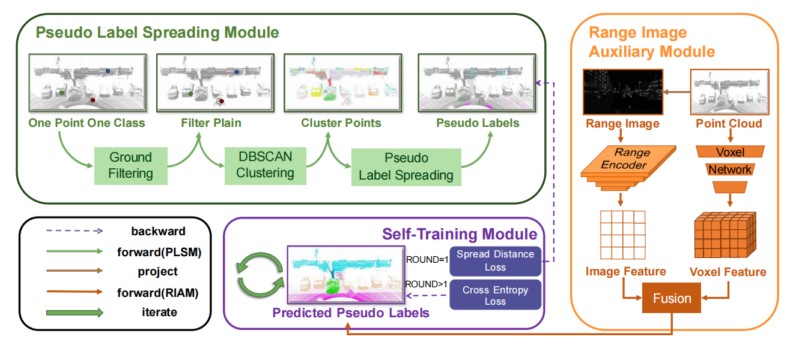
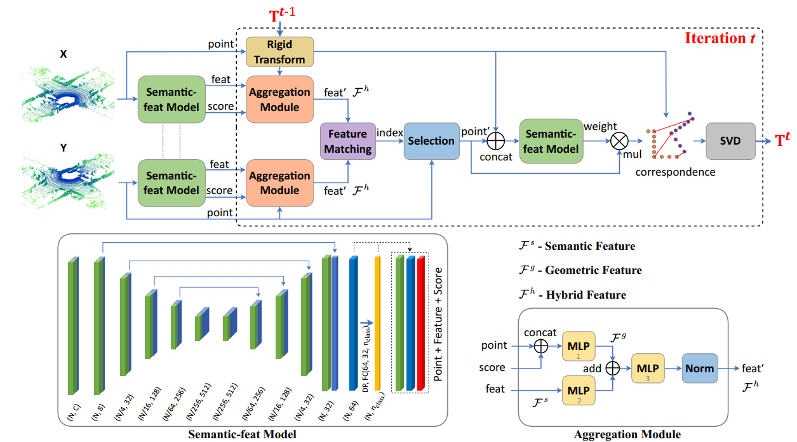

Professor at the Department of Artificial Intelligence at XMU
|
|
[Biography] [Projects (PI)] [ News] [Publications]
Biography [back top]
Dr. Chenglu Wen is a Professor at the Department of Artificial Intelligence at XMU. She was the deputy director of the Department of Artificial Intelligence. She is mainly engaged in the research of 3D scene perception and understanding, LiDAR point cloud processing, and 3D vision. She has been granted 3 National Natural Science Foundation of China projects. She has published over 80 papers and authorized over ten invention patents. She received the 2022 ISPRS Otto von Gruber Award (www.isprs.org/society/awards/gruber.aspx), the 2020 China LiDAR Youth Science and Technology Award, and Best Paper of the 2017 International Mobile Mapping Technology Conference. She serves as the Associate Editor of IEEE Trans. Intelligent Transportation Systems, and IEEE Geoscience and Remote Sensing Letters. She is also the co-chair of ISPRS working group I/2 Mobile Mapping Technology (2022-2026).
Projects (PI) [back top]
- Natural Science Foundation of China (NSFC), sequential point cloud learning in an urban dynamic scene, 2022-2025
- NSFC, large-scale labeling dataset generation with point clouds and multi-view images, 2018-2021
- NSFC, multi-dimensional quality assessment and repairing of indoor mobile mapping point cloud, 2015-2017
News [back top]
- 07/2024: One paper is accepted by ECCV 2024
- 02/2024, five papers are accepted to CVPR 2024
- 12/2023, two papers are accepted to AAAI 2024
- 07/2023, one paper is accepted to ICCV 2023
- 02/2023, four papers are accepted to CVPR 2023
- 11/2022, our VirConv-S method ranks No.1(car) on the KITTI 2D, 3D and BEV detection leaderboard
- 11/2022, our VirConvTrack ranks No.1(car) on the KITTI tracking leaderboard
- 11/2022, our 3D object detection paper TED is accepted to AAAI 2023
- 09/2022, our CasTrack ranks No.1(car) on the KITTI tracking leaderboard
- 06/2022, receive ISPRS Otto von Gruber Award
- 05/2022, our TED method ranks No.1(car) on the KITTI 3D detection leaderboard (until 11/2022)
- 05/2022, our CasA++ method ranks No.1(ped. and cyc.)/No.2(car) on the KITTI 3D detection leaderboard
- 03/2022, two Lidar motion capture papers are accepted to CVPR 2022
- 04/2021, two papers are accepted to IJCAI 2021
- 01/2021, our PC-TCNN ranks No.1(car) on the KITTI tracking leaderboard
- 11/2020, I receive CNISDE Lidar Youth Science and Technology Award
- 06/2020, our paper “road scene labeling” reached ESI highly cited paper
- 11/2019, our paper “Point2Node” is accepted to AAAI 2020 as Oral Presentation
- 02/2019, two papers are accepted to CVPR 2019
Research [back top]
- 3D Object Detection and Tracking
The research of 3D object detection and tracking serves the perception and understanding tasks of dynamic objects on unmanned platforms. The 3D object detection and tracking methods (published in ICCV, CVPR, IJCAI, IEEE TITS, IEEE TGRS, etc.) have ranked among the top in several international autonomous driving benchmarks. VirConv-S method ranks first in the KITTI 3D car detection and BEV car detection leaderboard (1st, 2022.11-now). The CasA++ method ranks first in the KITTI 3D Pedestrian detection (1st, 2022.11-now). - 3D Point Cloud Feature Learning
Oriented to the need for efficient point cloud processing, this research focuses on the deep feature description and semantic segmentation method of point clouds, laying a theoretical foundation for the application of complicated scene understanding. The research results were selected for the AAAI 2020 Oral paper and promoted into the national and industry standards. - 3D Localization and Mapping
This research aims at the localization and mapping challenges in the GNSS-denied and non-structural environment and serves the 3D perception ability of the unmanned platform. More specifically, it consists of (1) multi-constraints-based localization and mapping under the complex platform motion and (2) collaborative reconstruction of human motion and environment (published 4 CVPR papers). This research won the Best Paper Award at the 2017 International Mobile Mapping Conference and the 2018 featured paper of ISPRS J P&RS.
Selected Publications [back top]
2024
| Jinhao Deng, Wei Ye, Hai Wu, Xun Huang, Qiming xia, Xin Li, Jin Fang, Wei Li, Chenglu Wen✉, Cheng Wang
CMD: A Cross Mechanism Domain Adaptation Dataset for 3D Object Detection ECCV, 2024 |
|
| Qiming xia, Wei Ye, Hai Wu, Shijia Zhao, Leyuan Xin, Xun Huang, Jinhao Deng, Xin Li, Chenglu Wen✉, Cheng Wang
HINTED: Hard Instance Enhanced Detector with Mixed-Density Feature Fusion for Sparsely-Supervised 3D Object Detection CVPR, 2024 [paper] [code] |
|
| Zihui Wang, Cheng Wang, Xiaoliang Fan, Chenglu Wen
FedSAC: Dynamic Submodel Allocation for Collaborative Fairness in Federated Learning KDD, 2024 |
|
| Wen Li, Yuyang Yang, Shangshu Yu, Guosheng Hu, Chenglu Wen, Ming Cheng, Cheng Wang✉
DiffLoc: Diffusion Model for Outdoor LiDAR Localization CVPR, 2024 |
|
|  | Hai Wu, Shijia Zhao, Xun Huang, Chenglu Wen✉, Xin Li, Cheng Wang
Commonsense Prototype for Outdoor Unsupervised 3D Object Detection CVPR, 2024 |
| Bochun Yang, Zijun Li, Zhipeng Cai, Wen Li, Chenglu Wen, Yu Zang, Matthias Müller, Cheng Wang✉
LiSA：LiDAR Localization with Semantic Awareness CVPR, 2024 |
|
| Ming Yan, Yan Zhang, Shuqiang Cai, Shuqi Fan, Xincheng Lin, Yudi Dai, Siqi Shen✉, Chenglu Wen, Lan Xu, Yuexin Ma, Cheng Wang
RELI11D: A Comprehensive Multimodal Human Motion Dataset and Method CVPR, 2024 |
|
|  | Weijie Huang, Pufan Zou, Yan Xia, Chenglu Wen✉, Yu Zang, Cheng Wang
OPOCA:One Point One Class Annotation for LiDAR Point Cloud Semantic Segmentation IEEE Transactions on Geoscience and Remote Sensing |
| Kezheng Xiong, Maoji Zheng, Chenglu Wen✉, Qingshan Xu, Siqi Shen✉, Cheng Wang
SPEAL: Skeletal-Prior Embedded Attention Learning for Cross-Source Point Cloud Registration AAAI, 2024 |
|
 |
Xun Huang, Hai Wu, Chenglu Wen✉, Xiaoliang Fan, Xin Li, Cheng Wang
Sunshine to Rainstorm: Cross-Weather Knowledge Distillation for Robust 3D Object Detection AAAI 2024 |
2023
 |
Qiming xia, Jinhao Deng, Chenglu Wen✉, Hai Wu, Shaoshuai Shi, Xin Li, Cheng Wang
CoIn: Contrastive instance feature mining for outdoor 3d object detection with very limited annotations ICCV, 2023 [paper] [code] |
| Hai Wu, Chenglu Wen✉, Shaoshuai Shi, Xin Li, Cheng Wang
Virtual Sparse Convolution for Multimodal 3D Object Detection CVPR 2023 |
|
| Wen Li, Shangshu Yu, Cheng Wang, Guosheng Hu, Siqi Shen, Chenglu Wen
SGLoc: Scene Geometry Encoding for Outdoor LiDAR Localization CVPR 2023 |
|
| Ming Yan, Xin Wang, Yudi Dai, Siqi Shen✉, Chenglu Wen, Lan Xu, Yuexin Ma, Cheng Wang
CIMI4D: A Large Multimodal Climbing Motion Dataset under Human-scene Interactions CVPR 2023 |
|
| Yudi Dai, YiTai Lin, XiPing Lin, Chenglu Wen✉, Lan Xu, Hongwei Yi, Siqi Shen, Yuexin Ma, Cheng Wang
SLOPER4D: A Scene-Aware Dataset For Global 4D Human Pose Estimation In Urban Environments CVPR 2023 |
|
|  | Qing Li, Cheng Wang, Chenglu Wen✉, Xin Li
DeepSIR: Deep Semantic Iterative Registration for LiDAR Point Clouds Pattern Recognition, DOI:10.1016/j.patcog.2023.109306 |
| Hai Wu, Chenglu Wen✉, Wei Li, Xin Li, Ruigang Yang, Cheng Wang
Transformation-Equivariant 3D Object Detection for Autonomous Driving AAAI 2023 |
2022
| Hai Wu, Jinhao Deng, Chenglu Wen✉, Xin Li, Cheng Wang, Jonathan Li
CasA: A Cascade Attention Network for 3D Object Detection from LiDAR point clouds IEEE Transactions on Geoscience and Remote Sensing, DOI: 10.1109/TGRS.2022.3203163 |
|
| Wenkai Han, Hai Wu, Chenglu Wen✉
BLNet: Bidirectional Learning Network for Point Clouds Computational Visual Media，DOI: 10.1007/s41095-021-0260-6 |
|
 |
Shangshu Yu, Cheng Wang, Chenglu Wen✉, Ming Cheng, Minghao Liu, Zhihong Zhang, Xin Li
LiDAR-based Localization using Universal Encoding and Memory-aware Regression Pattern Recognition, DOI:10.1016/j.patcog.2022.108685 |
| Jialian Li, Jingyi Zhang, Zhiyong Wang, Siqi Shen, Chenglu Wen, Yuexi Ma, Lan Xu, JingYi Yu, Cheng Wang✉
LiDARCap: Long-range Marker-less 3D Human Motion Capture with LiDAR Point Clouds CVPR |
|
| Yudi Dai, Yitai Lin, Chenglu Wen✉, Siqi Shen, Lan Xu, Jingyi Yu, Yuexi Ma, Cheng Wang
HSC4D: Human-centered 4D Scene Capture in Large-scale Indoor-outdoor Space Using Wearable IMUs and LiDAR CVPR, DOI：10.48550/arXiv.2203.09215, 2022 |
|
| Xuelun Shen, Cheng Wang, Xin Li, Yifan Peng, Zijian He, Chenglu Wen, Ming Cheng
Learning scale awareness in keypoint extraction and description Pattern Recognition |
|
| Xuelun Shen, Cheng Wang, Xin Li, Yifan Peng, Zijian He, Chenglu Wen, Ming Cheng
3D Multi-Object Tracking in Point Clouds Based on Prediction Confidence-Guided Data Association IEEE Transactions on Intelligent Transportation Systems |
2021
| Hai Wu, Qing Li, Chenglu Wen✉, Xin Li, Xiaoliang Fan, Cheng Wang
Tracklet Proposal Network for Multi-Object Tracking on Point Clouds IJCAI |
|
| Lili Lin, Wenwen Zhang, Ming Cheng, Chenglu Wen, Cheng Wang
Planar Primitive Group-Based Point Cloud Registration for Autonomous Vehicle Localization in Underground Parking Lots IEEE Geoscience and Remote Sensing Letters |
|
| Xuelun Shen, Cheng Wang, Xin Li, Yifan Peng, Zijian He, Chenglu Wen, Ming Cheng
Learning scale awareness in keypoint extraction and description Pattern Recognition |
|
| Yudi Dai, Chenglu Wen✉, Hai Wu, Yulan Guo, Longbiao Chen, Cheng Wang
Indoor 3D Human Trajectory Reconstruction Using Surveillance Camera Videos and Point Clouds IEEE Transactions on Circuits and Systems for Video Technology, 32(4): 2482-2495, 2022 |
|
| Chenglu Wen, Jinbin Tan, Fashuai Li, Chongrong Wu, Yitai Lin, Zhiyong Wang, Cheng Wang
Cooperative indoor 3D mapping and modeling using LiDAR data Information Sciences, 574:192- 209, 2021 |
2020
 |
Cheng Wang, Yudi Dai, Naser Elsheimy, Chenglu Wen, Guenther Retscher, Zhizhong Kang, Andrea Lingua
ISPRS Benchmark on multisensory indoor mapping and positioning ISPRS Annals of Photogrammetry, Remote Sensing & Spatial Information Sciences |
| Wenkai Han，Chenglu Wen✉，Cheng Wang，Xin Li，Qing Li
Point2Node:correlation Learning of Dynamic-Node for Point Cloud Feature Modeling AAAI oral |
|
| Wei Li, Cheng Wang, Chenglu Wen, Zheng Zhang, Congren Lin, Jonathan Li
Pairwise registration of TLS point clouds by deep multi-scale local features Neurocomputing |
|
 |
Wei Li, Cheng Wang, Congren Lin, Guobao Xiao, Chenglu Wen, Jonathan Li
Inlier extraction for point cloud registration via supervoxel guidance and game theory optimization ISPRS Journal of Photogrammetry and Remote Sensing, DOI：10.1016/j.isprsjprs.2020.01.021, 2020 |
| Cheng Wang, Chenglu Wen, Yudi Dai, Shangshu Yu, Minghao Liu
Urban 3D modeling with mobile laser scanning: a review Virtual Reality & Intelligent Hardware, DOI：10.1016/j.vrih.2020.05.003, 2020 |
|
| Yi-Ting Cheng, Ankit Patel, Chenglu Wen, Darcy Bullock, Ayman Habib
Intensity Thresholding and Deep Learning Based Lane Marking Extraction and Lane Width Estimation from Mobile Light Detection and Ranging (LiDAR) Point Clouds Remote Sensing, DOI：10.3390/rs12091379, 2020 |
2019
| Zongliang Zhang, Chenglu Wen, Yiping Chen, Wei Li, Changbin You, Chao Wang, J Li
Indoor scene registration based on siamese network and pointnet ISPRS Annals of the Photogrammetry, Remote Sensing and Spatial Information Sciences |
|
| Cheng Wang, Yudi Dai, Naser El-Sheimy, Chenglu Wen, Guenther Retscher, Zhizhong Kang, Andrea Lingua
PROGRESS ON ISPRS BENCHMARK ON MULTISENSORY INDOOR MAPPING AND POSITIONING International Archives of the Photogrammetry, Remote Sensing & Spatial Information Sciences |
|
| Qing Li, Cheng Wang, Shaoyang Chen, Xin Li, Chenglu Wen, Ming Cheng, Jonathan Li
DEEP LIDAR ODOMETRY International Archives of the Photogrammetry, Remote Sensing & Spatial Information Sciences |
|
| Chenglu Wen, Changbin You, Hai Wu, Cheng Wang, Xiaoliang Fan, Jonathan Li
Recovery of urban 3D road boundary via multi-source data ISPRS Journal of Photogrammetry and Remote Sensing |
|
 |
Shanxin Zhang, Cheng Wang, Lili Lin, Chenglu Wen, Chenhui Yang, Zhemin Zhang, Jonathan Li
Automated Visual Recognizability Evaluation of Traffic Sign Based on 3D LiDAR Point Clouds Remote Sensing, DOI：10.3390/rs11121453, 2019 |
| Chenglu Wen✉, Yudi Dai, Yan Xia, Yuhan Lian, Jinbin Tan, Cheng Wang, Jonathan Li
Toward Efficient 3-D Colored Mapping in GPS-/GNSS-Denied Environments IEEE Geoscience and Remote Sensing Letters, DOI：10.1109/LGRS.2019.2916844, 2019 |
|
| Zheng Gong, Jonathan Li, Zhipeng Luo, Chenglu Wen, Cheng Wang, John Zelek
Mapping and semantic modeling of underground parking lots using a backpack LiDAR system IEEE Transactions on Intelligent Transportation Systems, DOI：10.1109/TITS.2019.2955734, 2019 |
|
| Chuanpan Zheng, Xiaoliang Fan, Chenglu Wen, Longbiao Chen, Cheng Wang, Jonathan Li
DeepSTD: Mining Spatio-Temporal Disturbances of Multiple Context Factors for Citywide Traffic Flow Prediction IEEE Transactions on Intelligent Transportation Systems, DOI：10.1109/TITS.2019.2932785, 2019 |
|
| Xuelun Shen, Cheng Wang, Xin Li, Zenglei Yu, Jonathan Li, Chenglu Wen, Ming Cheng, Zijian He
Rf-net: An end-to-end image matching network based on receptive field CVPR, DOI：10.1109/CVPR.2019.00832, 2019 |
|
| Chenglu Wen, Xiaotian Sun, Jonathan Li, Cheng Wang, Yan Guo, Ayman Habib
A deep learning framework for road marking extraction, classification and completion from mobile laser scanning point clouds ISPRS journal of photogrammetry and remote sensing, DOI：10.1016/j.isprsjprs.2018.10.007, 2019 |
|
| Qing Li, Shaoyang Chen, Cheng Wang, Xin Li, Chenglu Wen, Ming Cheng, Jonathan Li
Lo-net: Deep real-time lidar odometry CVPR，DOI：10.1109/CVPR.2019.00867, 2019 |